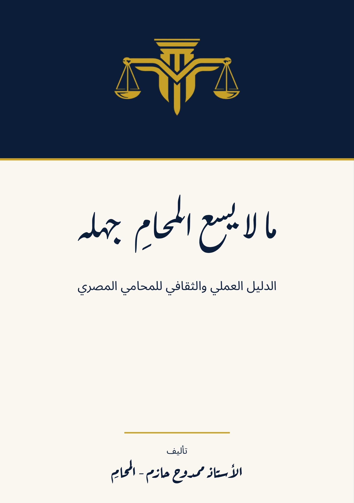
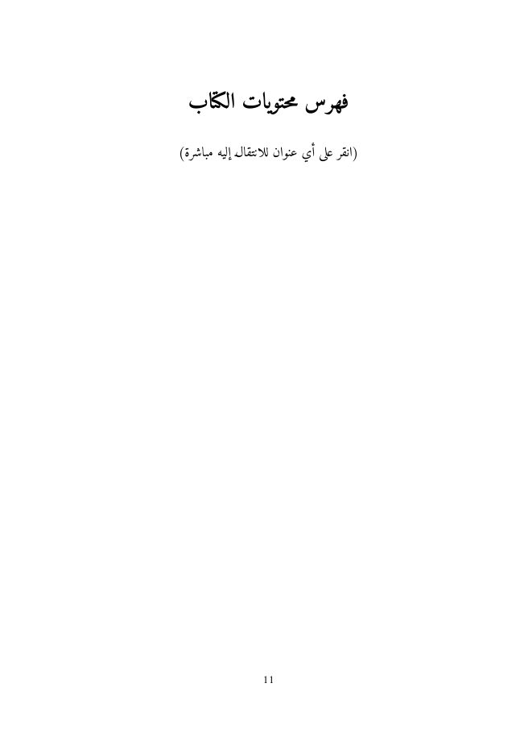
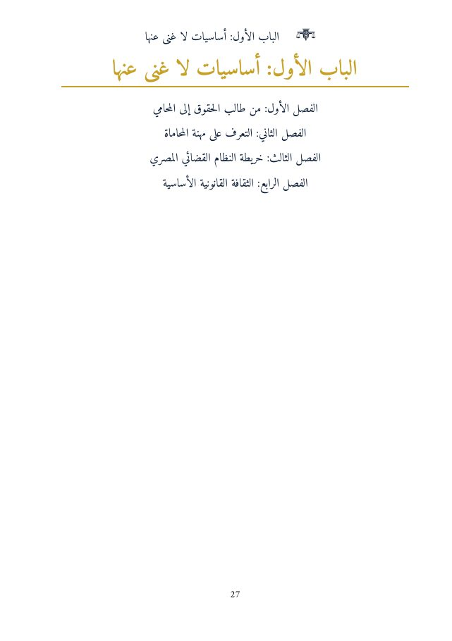
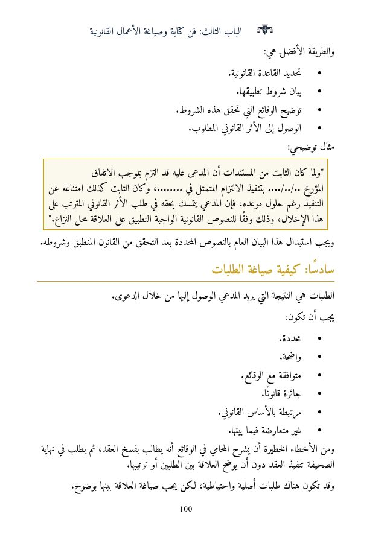

عملي، مش نظري
مكتوب بعقلية المكتب والمحكمة: إزاي تتعامل مع القضية من أول مقابلة مع العميل، وتكتب الصحيفة، وتدير الجلسة، وتتابع التنفيذ.
الدليل العملي والثقافي للمحامي المصري
من أول يوم في المكتب إلى إدارة القضايا والمرافعة: خلاصة الخبرة العملية والثقافة القانونية في 23 بابًا و1155 صفحة، بلغة بسيطة مباشرة.

مكتوب بعقلية المكتب والمحكمة: إزاي تتعامل مع القضية من أول مقابلة مع العميل، وتكتب الصحيفة، وتدير الجلسة، وتتابع التنفيذ.
أخلاقيات المهنة، أصول التعامل مع القضاة والخصوم والعملاء، وإدارة مكتب المحاماة باحتراف — الجزء الذي لا تدرّسه الكلية.
الجنائي والمدني والمرافعات والإثبات، قانون العمل والتأمينات، التجاري والشركات والأوراق التجارية، الضرائب، الملكية الفكرية، حماية المستهلك، الاستثمار والإفلاس.
ثلاثة وعشرون بابًا تضع بين يديك خبرة المهنة وثقافتها — لا للمحامي المبتدئ وحده، بل لكل من أراد أن يفهم القانون كما يُمارَس لا كما يُقرأ.



نسخة مطبوعة فاخرة بمقاس A5 — 1155 صفحة تجمع الدليل كاملًا بين إيديك. ابعتلنا على واتساب وسيب بياناتك وهنتواصل معاك لتأكيد الطلب والتوصيل.
لو عندك أي استفسار عن الكتاب: 01002809232.